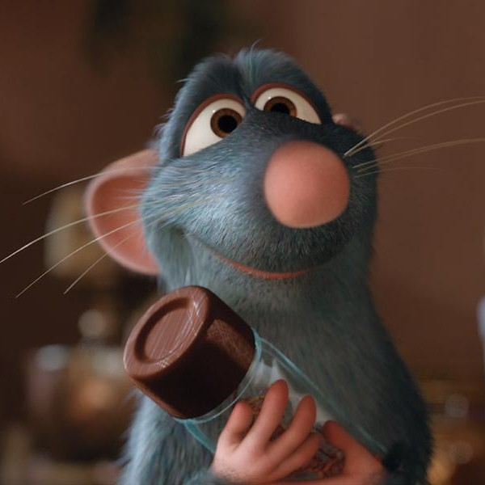

Використання div і span
Приклад

А я думаю, що якщо я це те, що я їм, то сміття я їсти не буду. - Ремі
Дізнатись більшеА я думаю, що якщо я це те, що я їм, то сміття я їсти не буду. - Ремі
Дізнатись більше